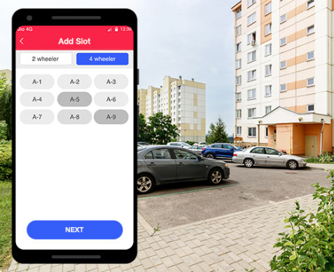

Our Services & Features
CCTV & Smart Surveillance
Our society is equipped with advanced CCTV cameras and smart surveillance systems that provide round-the-clock monitoring.

Visitor & Access Management
To maintain complete control over entries, our digital visitor and access management system ensures that only authorized individuals can enter the premises.
Emergency Helpline & SOS Button
You’re now just a long press away from help when in any uncertain situation. Your family and society’s security guards will get quickly alerted about your live location.

Vehicle & Parking Management
To make everyday life more convenient, our smart vehicle and parking management system provides proper allocation of parking spaces and enables real-time tracking of vehicles.